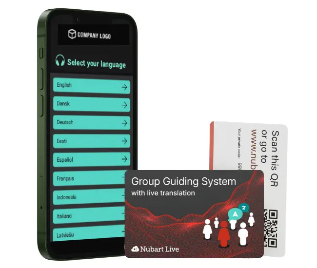
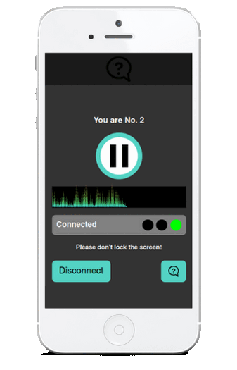
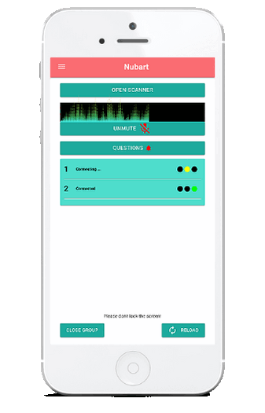

従来のツアーガイドツールをスマートフォンに置き換える
騒がしい工場、混雑した博物館、あるいは賑やかな街中でのツアーをご案内されていませんか？ グループの半数があなたの声が聞こえない状況で、全員の関心を維持するのに苦労していませんか？
Nubart®LIVEは、簡単なQRコードスキャンを通じて、 参加者のスマートフォンに直接音声配信いたします。通常通りそのまま話すだけでOKです参加者は各自のヘッドホンで、 最も騒がしい環境下でもクリアな音声を聴くことができます。
特別な機器は不要です。アプリのダウンロードも不要です。再利用可能なQRコードカードとインターネット接続さえあれば十分です。
グループツアーを運営するには、かさばる機器よりも優れた方法がございます
旧方式
- ガイドの声が騒音にかき消されやすい
- 参加者はかさばる、消毒されていない機器を身につけておられます
- 参加者は高価なテクノロジーをレンタルまたは購入されます
- 海外からの参加者は疎外感を抱きます
- 双方向オーディオによる混乱したグループ管理
- 継続的なレンタル費用
Nubart LIVEなら
- ガイドが自然に話す → ゲストは各自のスマートフォンで聴取
- アプリのインストール不要、機器の消毒も不要
- QRコードをスキャンするだけ。面倒な設定は不要です。
- 最大33言語のAI翻訳オプション
- 参加者は静かに質問を送信できます
- 参加者は一度お支払いいただくだけで、カードは繰り返しご利用いただけます
500枚の再利用可能カードで599ユーロから（1回限りの購入、定期購読なし） ・価格の詳細はこちら →
ヌバートLIVEの仕組み - 基本コンセプト

ガイドとして、スマートフォンでグループを開きます。参加者が参加します。 お話しください。
Nubart LIVEがツアーでどのように機能するか、ぜひご覧ください。
無料トライアルキットをご請求ください参加者が既に所有されているデバイスで動作します
スマートフォンをワイヤレスツアーガイド受信機に変えます
簡単にご利用いただけます
参加者とガイド双方がカード上の固有QRコードをスキャンするだけです。登録やアプリのダウンロードは不要です（ガイドのみ登録が必要です）。
お手頃価格
基本パッケージ（カード500枚）は、ツアーガイドシステムのレンタル費用よりも低価格であり、 多くのツアーにご利用いただけます。
匿名性
Nubart LIVEをご利用いただくにあたり、参加者が個人情報を提供する必要はございません。 完全に匿名でご利用いただけます。
ガイドへの質問
参加者はガイドの進行を妨げることなく、いつでも質問を送信できます： ガイドは蓄積された質問リストを随時確認可能です。
衛生面
従来のツアーガイド用ヘッドセットは、使用のたびに消毒が必要です。当社のカードは違います！
持続可能で廃棄物ゼロ
電子機器は電子廃棄物を発生させ、リチウム電池を使用します。当社のカードは FSC認証の段ボールに印刷され、CO2排出量を相殺しています。
Nubart LIVEの活用事例をご覧ください
活用事例
工場見学
工場内を非常にコスト効率良くご案内いただけます：
スマートフォンの指向性マイクと組み合わせることで、Nubart LIVEは騒がしい環境でのツアーに最適です。
市内観光
Nubart LIVEは、フィールドトリップやガイド付き市内観光向けのシンプルで手頃な無線通信システムです：
交通騒音を気にせず、
参加者が離れてもご安心ください。
アクセシビリティ
Nubart LIVEは、より包括的な体験を実現します：
ツアー中にスマートフォンでヘッドホンを使用することで、
聴覚に障害のある方々の体験が大幅に改善されます（背景騒音による干渉がなく、音量調整が可能です）。
工場・プラント見学に最適
工場見学の課題を解決
騒がしい製造環境ではコミュニケーションが困難です。 従来の無線ガイドシステムは購入・レンタル費用が高く、継続的なメンテナンスが必要で、 多言語グループへの対応が容易ではありません。
工場がNubart LIVEを選ぶ理由：
- 高度なノイズ抑制- 騒がしい工場内でもクリアな音声を実現
- オプションの指向性マイク- 厳しい環境下でも音声品質を向上
- 従業員研修・オンボーディング- 国際的な従業員を母国語で研修
- VIP参加者のプライバシー保護- 匿名参加が可能で、機密性の高い見学に最適です
- 周波数制限なし- 免許制無線システムとは異なり、インターネット経由で 世界中でご利用いただけます
- 不定期利用- 毎日のツアーではなく、四半期ごとの投資家訪問に最適です
工場における主な活用事例：
- 投資家・ステークホルダー向けツアー
- 新入社員オリエンテーションおよび安全研修
- 参加者向け工場見学
- 展示会ブースでのデモンストレーション
AI翻訳アドオンで言語の壁を打破
オプションのAI搭載同時通訳機能

国際的な観光客向けのツアーをご案内されていますか？ 通訳者を雇うことなく、1人のガイドが 多言語グループに対応できるようになりました。
オプションのAI翻訳アドオンはNubart LIVEとシームレスに連携します：
- 参加者は同じQRコードをスキャンしますが、35以上の言語オプションからお好みの言語を選択できます
- 元の言語で自然な音声をお聞きいただけます
- または画面上にテキストと音声の両方でリアルタイムAI翻訳を受け取れます
- 参加者がご自身の言語で質問を記入された場合、 質問は自動的に翻訳されます
一つのツアーで複数の言語に対応。追加のガイドは不要です。
Nubart LIVEのAI翻訳アドオン付きデモ
音声付きで動画を再生してください！
ガイドについてご質問がございましたら、お気軽にお問い合わせください
一般的なツアーガイドシステム（機器）の多くは、
参加者が質問することを許可していません。
一方、プッシュ・トゥ・トークボタンを備えたシステムでは、参加者がグループ全体に向けて質問を放送できます。しかし、内気な参加者はガイドの進行を妨げることを躊躇するかもしれません。また、大胆な参加者がツアーを支配し、延々と質問を続けることで、全員の体験を悪化させる可能性があります。
Nubart LIVEは、ガイドのスマートフォンに質問を集約し、適切なタイミングで回答できる
負担のない方法を提供します。
同時通訳モジュールをご購入いただいている場合、質問は自動的に翻訳されます。
参加者

ガイド

信頼されている
よくあるご質問
よくあるご質問
ご利用開始
ツアー中
ガイドとしてグループを開設する際は、遅れて参加される方のために、 数枚余分にカードをスキャンしておくことをお勧めいたします。
遅れて参加された方には、事前にスキャン済みのカードをお渡しください。 それだけで、すぐにグループに参加できます。
グループを終了した後、それらの予備のカードは次のツアーで再利用できます。カードは参加者が自身でスキャンした時点で初めて譲渡不可となり、ガイドがスキャンした時点では譲渡可能です。
遅延はスマートフォンの性能、接続品質、参加者が同じモバイル通信事業者を利用しているか否かによって影響を受けます。
ただし、ガイドが小声でお話しになる場合、遅延はほとんど気にならない程度です。 参加者の皆様には、主にスマートフォンから増幅された声が聞こえ、 ガイドの自然な声の反響はほとんど聞こえません。
通話中はグループは接続されたまま保留状態となります。通話終了後はブラウザに戻ってください。一部の参加者の表示が緑色ではなく赤色になっている場合は「再読み込み」をタップしてください。全員のQRコードを再スキャンする必要なく再接続されます。
ご注意：Android端末では、通話応答前にミュートを忘れた場合、参加者に通話内容が聞こえる可能性があります。iPhoneでは音声は聞こえません。
AI翻訳アドオン
詳細はご利用手順をご覧ください。
Google翻訳は短い音声スニペットを再生できますが、 継続的でハンズフリーの音声ストリームを提供するように設計されていません。 各参加者は個別にアプリを操作し、マイクの開始・停止、 再生のトリガー、画面上の小さなテキストの読み取りを行わなければなりません。 タイミング、中断、遅延は人によって異なり、グループ環境ではすぐに混乱を招きます。
Nubart LIVEは、ガイド付きツアーや工場見学のために特別に設計されています。ガイドがマイクに向かって一度話すだけで、参加者全員が各自のスマートフォンで同期した同一の音声ストリームを受信します。アプリのダウンロードは不要です。
オプションのAI翻訳機能を追加すれば、翻訳がガイドのライブ音声ストリームに直接連動します。 参加者は各自で翻訳アプリを起動する必要がなく、希望する言語を選択するだけで、 全員で一緒にツアーを追体験できます。
要するに：Google翻訳は個人利用に最適ですが、Nubart LIVEは共有・同期型のガイド付き体験を想定して設計されています。
技術的な詳細
ただし、これはグループメンバーには影響しません。 メンバーのバッテリー消費量は、ポッドキャストやオーディオブックを聴く場合と ほとんど変わりません。例えば、4年前のAndroidスマートフォンで1時間連続使用しても、 バッテリー消費量は約8%です。
カード
ご希望の画像、ロゴ、その他の要素をお送りいただければ、当社のデザイナーが複数のデザイン案を作成し、お選びいただけます。
Nubart LIVEの価格についてはこちらをご覧ください
個別デザインをご希望の場合、最低注文数は3,000枚となります。
Nubart LIVEの価格をご確認ください
団体ツアーの変革をお考えですか？
Nubart LIVEをリスクフリーでお試しください。30分間の無料AI翻訳付きトライアルキットをご用意しております。
無料トライアルキットをご請求くださいクレジットカード不要テスト期間中も完全サポート